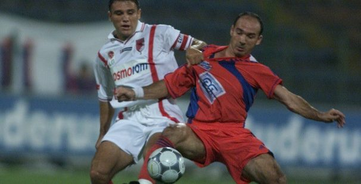

Chiar daca nu parea, acel meci era pentru Steaua unul foarte important. Intre 19 aprilie 1992 si 22 aprilie 2000, adica timp de 8 ani, Steaua fusese neinvinsa in fata marelui dusman. A fost vorba de cea mai lunga serie fara infrangere in fata rivalei de-o viata, 19 meciuri. Si totul s-a terminat in primavara lui 2000, cand cainii au reusit sa ne invinga, in sfarsit, cu 3-2, la ei acasa. A fost lovitura de gratie, primita intr-un sezon 1999-2000 oribil, castigat chiar de caini si pe care noi l-am terminat pe locul 3. Asadar, meciul din 19 august era chiar mai important, victoria fiind obligatorie.
Primele doua etape ale sezonului 2000-2001 nu au fost foarte stralucite pentru Steaua. O victorie chinuita, acasa, cu Bacaul, 4-3, in prima etapa, si un egal la Petrolul, 1-1, ne-au adus 4 puncte, care ne-au plasat pe locul 5, inainte de Unicul Derby.
Cainii, in schimb, au avut doua meciuri mai grele. In prima etapa, au invins FC National chiar in Cotroceni, cu scorul de 3-1. In a doua au intalnit Rapidul si au facut 0-0, in Stefan cel Mare. Tot 4 puncte aveau si ei, dar ocupau locul 2, inainte de meciul cu Steaua. Dinamo era campioana en titre, jucase meciurile mai tari, era mai sus in clasament si putea fi considerata favorita. Insa, pentru Unicul Derby nu exista echipe favorite.
In 19 august, Ghencea s-a umplut, ca intotdeauna. Tribunele urlau, timpul s-a oprit si meciul a inceput.
Meciul a inceput cum nu se putea mai bine pentru Steaua, Vladoiu deschizand scorul in minutul 15. Jean n-a fost niciodata vreun stalp, un varf de careu inalt si puternic. Are doar 1,70 inaltime, dar asta nu l-a oprit niciodata sa inscrie. Iar in acel meci el a inscris chiar cu capul. S-a inaltat intre fundasii dinamovisti si a lovit perfect, cu capul, mingea trimisa de Florentin Dumitru, din corner. Stadionul a sarit in aer.
Steaua avea 1-0 si o echipa foarte buna in teren, insa nici cainii nu stateau rau. Lotul pe care l-au avut atunci ar face astazi instructie cu toata Liga 1. Asa ca, a urmat o lupta grea, dura, care a tinut pana in minutul 70, cand Steaua a marcat al doilea gol al meciului.
L-a inscris Danciulescu, nasul cainilor, dintr-o centrare primita tot de la Florentin Dumitru. Danci incepuse meciul ca rezerva. A intrat in teren in repriza secunda, in locul lui Ciocoiu. In tricoul rosu si albastru, marcase 5 goluri in poarta cainilor, in 3 ani. Asadar, era imposibil sa nu-si treaca si el numele pe tabela.
Faza a inceput in jumatatea Stelei. Florentin Dumitru a pornit intr-una din cursele sale de pe dreapta, a driblat un dinamovist, a continuat cursa in viteza si, cand a ajuns langa careul dinamovist, a trimis una din centrarile sale perfecte. Mingea s-a oprit fix pe fruntea lui Danciu, aflat in plin plonjon in acel moment. De acolo, s-a dus in poarta cainilor. Stadionul urla din nou, Danciu sarbatorea iar Tene urla la fundasii lui.
Meciul parea terminat, dar cainii au inscris si ei, dupa doar 2 minute. Kirita a marcat, cu o racheta trasa de la peste 30 de metri. Mai mult, Baciu a fost eliminat in 85, iar cainii pareau sa fi reintrat in joc. Insa dinamovistii nu au fost capabili sa se foloseasca eficient de avantajul din teren. In minutul 89, Steaua a pornit un contraatac in trei oameni. Danciulescu i-a pasat lui Carabas, liber la vreo 30 de metri de poarta dinamovista. Acesta a pasat la randul lui, printre, pentru Vladoiu. Jean a mai facut cativa pasi, a intrat in careu si a tras cu stangul, fara sanse pentru Tene. Era minutul 89 iar Steaua avea 3-1 pe tabela. Meciul se putea termina asa, dar Jean si-a adus aminte ca si el era un nas de-al cainilor. Mai mult, el jucase chiar la Dinamo, in sezonul 1998-1999, si plecase de acolo cu scandal. Asa ca, in minutul 90, dupa o noua gafa defensiva a dinamovistilor, Vladoiu a pornit cu mingea la picior de la mijlocul terenului, a alergat pana in careu, unde l-a driblat pe Tene si a inscris in poarta goala.
Unicul Derby din 19 august 2000 s-a terminat cu scorul de 4-1 pentru Steaua, o victorie frumoasa si cat se poate de dulce. „Delir in Ghencea”, titra atunci ProSport, pe prima pagina. Si asa era. Dupa acea victorie, Steaua s-a instalat pe primul loc in campionat, loc pastrat aproape in totalitate pana la finalul acelui sezon, pe care l-a si castigat. Acela a fost ultimul titlu castigat de Steaua, titlul cu numarul 21.
